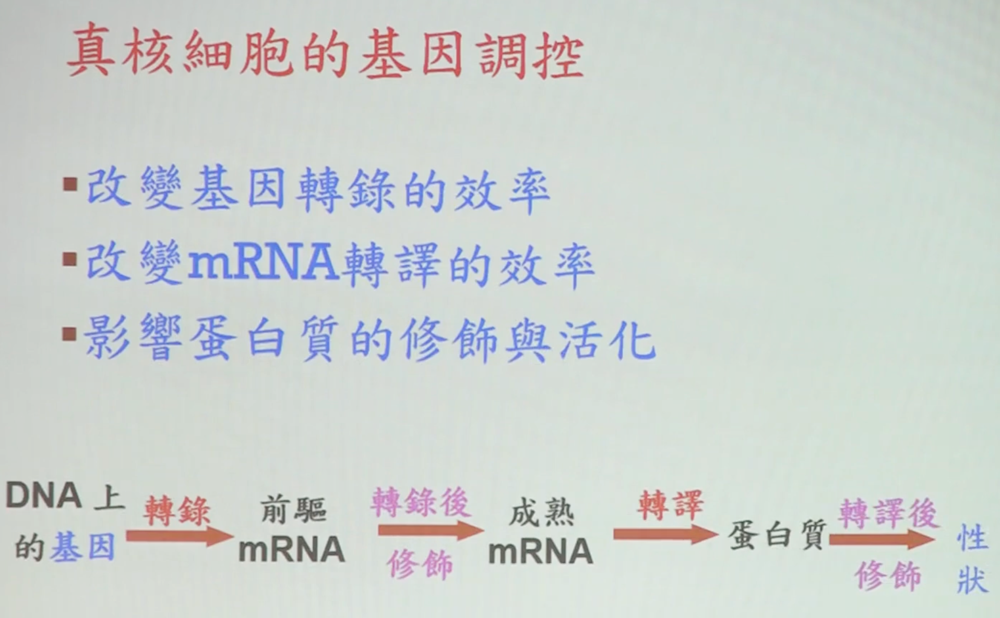
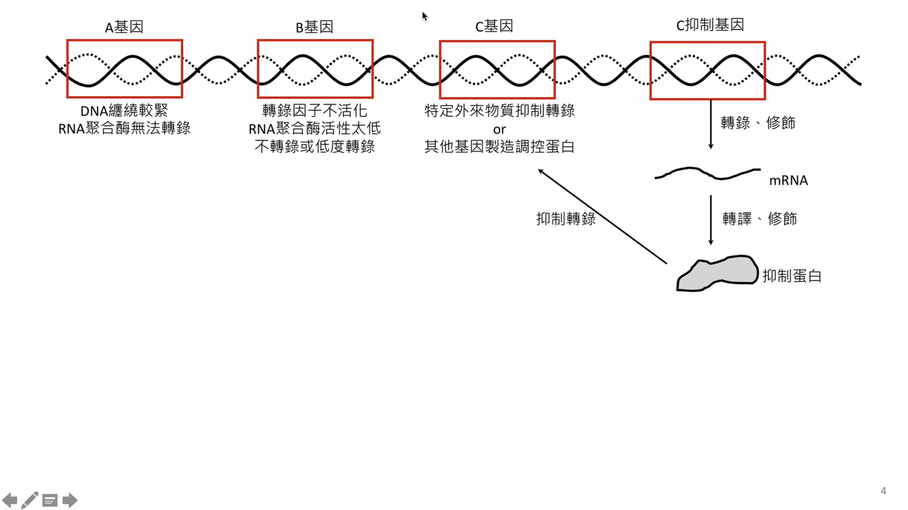
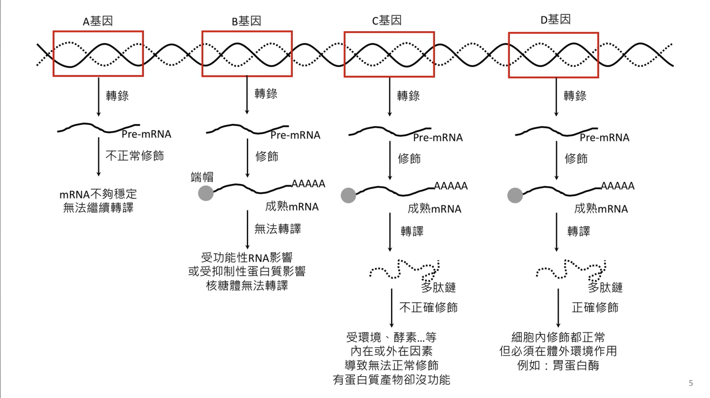
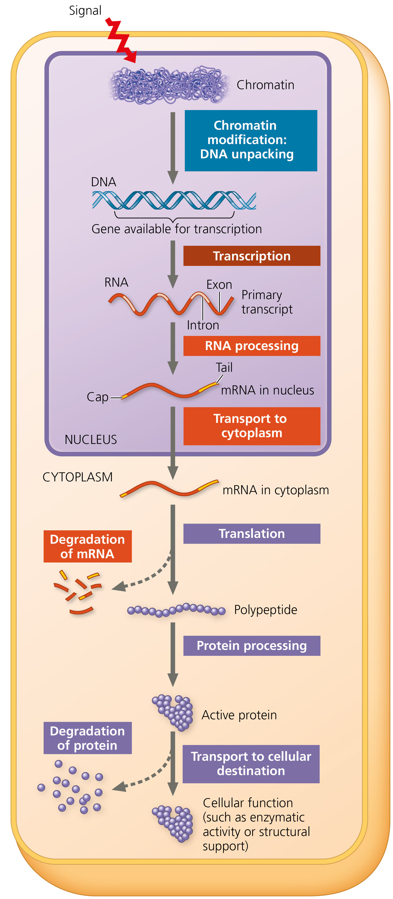
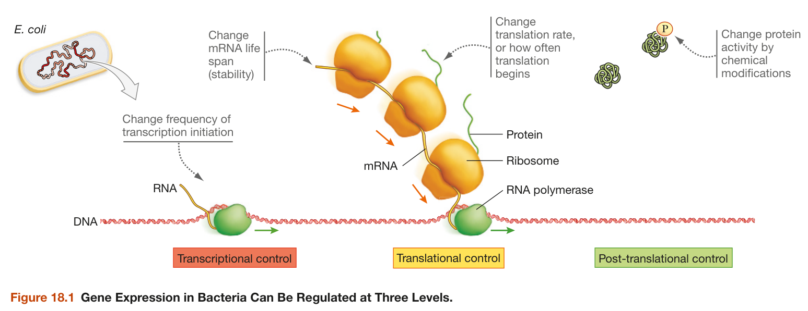
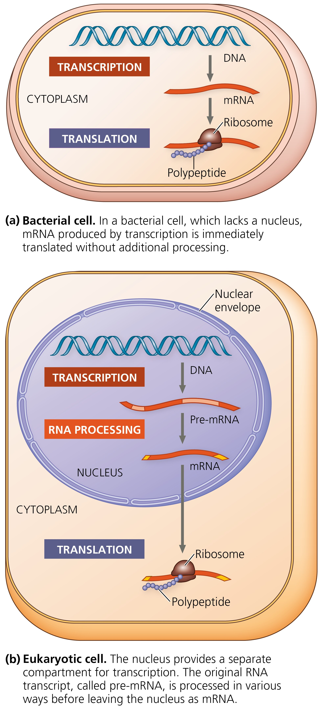

原核與真核的基因表現調控
學完乳糖操縱組後，怎麼讓學生看出細菌也會調控轉譯和蛋白質活性？同樣會使蛋白質產量改變，mRNA 壽命和轉譯起始效率各影響哪個步驟？
原核與真核細胞都能調控轉錄、轉譯與蛋白質活性。細菌的轉錄與轉譯可以同時進行。真核細胞的核基因在核內轉錄，mRNA 經加工並輸出到細胞質後，由核糖體轉譯，也可在 RNA 加工和出核等步驟受到調控。
原核與真核細胞的比較
| 調控階段 | 細菌（原核生物的例子） | 真核細胞（以核基因為例） |
|---|---|---|
| 轉錄前，DNA 是否容易被接觸 | DNA 的超螺旋（雙股 DNA 進一步扭轉的狀態）或與 DNA 結合的蛋白質，可影響轉錄相關蛋白質與 DNA 的接觸。 | 染色質是 DNA 和蛋白質組成的構造。染色質的排列或組蛋白修飾等，會影響 DNA 是否容易被轉錄相關蛋白質接觸。 |
| 轉錄，產生多少 RNA | 以乳糖操縱組為例，抑制蛋白與活化蛋白都能影響 RNA 聚合酶的轉錄作用。 | 轉錄因子可結合啟動子附近或較遠的調控序列，改變轉錄起始。 |
| 轉錄後，RNA 如何加工或保留 | 可改變 mRNA 的降解速率，影響 mRNA 能被使用多久。 | 前驅 mRNA 可經剪接等加工。成熟 mRNA 的出核與降解也可受到調控。部分基因可透過選擇式剪接，將同一基因的前驅 mRNA 剪接成不同的成熟 mRNA。 |
| 轉譯，核糖體多常開始讀取 mRNA | 核糖體在 mRNA 上的結合位置若被遮住，轉譯便較難開始。 | 細胞可以透過調控蛋白或微 RNA（miRNA，一種可辨識目標 mRNA 的短 RNA）改變轉譯效率。部分 miRNA 也會促進 mRNA 降解。 |
| 轉譯後，蛋白質有多少、能否發揮作用 | 可藉由磷酸化（加上磷酸基）等方式改變蛋白質活性，也可透過降解改變蛋白質含量。 | 可藉由修飾、運送、活化或降解等方式影響蛋白質在哪裡作用、有多少，以及活性如何。 |
細菌和真核細胞的許多基因都以轉錄為重要控制點。調控 mRNA 或已有的蛋白質，也能改變細胞製造蛋白質的量或蛋白質的作用。 延伸閱讀見原核基因調控分類。
mRNA 壽命和轉譯起始效率差在哪裡？
| 比較項目 | mRNA 壽命 | 轉譯起始效率 |
|---|---|---|
| 問什麼？ | 一條 mRNA 在細胞裡可供使用多久？ | 同一條可用的 mRNA，在一段時間內多常被核糖體開始讀取？ |
| 調控層次 | 轉錄後調控，改變 mRNA 的穩定性或降解速率。 | 轉譯調控，改變核糖體結合及開始轉譯的頻率。 |
| 為何會影響蛋白質產量？ | 若其他條件相同，mRNA 降解較慢，核糖體就有較長的時間反覆使用這條 mRNA。 | 即使 mRNA 的壽命相同，核糖體開始轉譯得更頻繁，同一段時間就通常能合成更多蛋白質。 |
Freeman 圖 18.1 把「改變 mRNA 壽命」和「改變轉譯速率或起始頻率」放在同一個轉譯調控區塊，兩種變化都會影響蛋白質產量。上表按直接受影響的步驟分類，因此把 mRNA 壽命和每條 mRNA 的起始頻率分開。選擇式剪接則放在 RNA 加工，因為它改變的是成熟 mRNA 的組成。
投影片與原文書圖

點擊放大來源為使用者提供的投影片。
開啟原尺寸圖片
點擊放大使用者提供的投影片，第 4 頁。
讀圖重點
先看 DNA 能不能被接觸，再看 RNA 聚合酶能不能順利開始轉錄。
- A 基因｜染色質層次。 DNA 包裝得較緊，轉錄所需的蛋白質較難接觸這段 DNA，轉錄量可能因此降低。
- B 基因｜轉錄起始。 需要的轉錄活化因子未活化，RNA 聚合酶就較難在這個基因的啟動子開始轉錄。
- C 基因｜抑制轉錄。 沿著右側斜箭頭看，另一個基因經轉錄、轉譯產生抑制蛋白，這個蛋白質再降低 C 基因的轉錄。

點擊放大使用者提供的投影片，第 5 頁。
讀圖重點
這張圖涵蓋轉錄後、轉譯和轉譯後。判斷時先看直接受影響的是 mRNA 的壽命、核糖體的起始，還是蛋白質的活性。
- A 基因｜轉錄後調控（mRNA 穩定性）。 圖中的 RNA 加工異常使 mRNA 容易降解，縮短核糖體可使用它的時間，因此蛋白質合成量可能減少。
- B 基因｜轉譯調控（轉譯起始）。 成熟 mRNA 仍在。調控 RNA 或抑制蛋白妨礙核糖體開始轉譯。直接受影響的是每條可用 mRNA 的轉譯起始。
- C 基因｜轉譯後的蛋白質修飾。 多肽鏈已經合成。圖中缺少蛋白質發揮功能所需的修飾，因此成品可能沒有活性。若是修飾機制出錯，精確說是「轉譯後加工異常」。細胞藉由改變修飾狀態來控制蛋白質活性時，才是在描述調控機制。
- D 基因｜分泌後的蛋白質活化。 胃腺主細胞先分泌胃蛋白酶原，也就是尚未活化的酵素前驅物。到了酸性的胃腔，胃蛋白酶原會經過切割，移除一段肽鏈，成為有活性的胃蛋白酶。這是正常的活化流程，讓酵素在合適的位置和時機開始作用。
在圖上的分層，C 和 D 都在轉譯後。蛋白質「加工」描述分子發生什麼改變，「活化」描述蛋白質如何開始發揮功能。D 的切割同時是轉譯後加工和活化。
胃蛋白酶原的分泌與活化可對照 Campbell Biology 第 13 版第 41 章圖 41.10。 Foltmann（1988），人類胃蛋白酶原的活化研究
開啟原尺寸圖片
點擊放大Campbell Biology，第 13 版（13e），第 18 章〈Regulation of Gene Expression〉，圖 18.6，原書第 374 頁（所據英文 PDF 第 409 頁）。
Stages in gene expression that can be regulated in eukaryotic cells. In this diagram, the colored boxes indicate the processes most often regulated; each color indicates the type of molecule that is affected blue = DNA, red/orange = RNA, purple = protein.
沿著彩色方框讀，可以看到染色質、轉錄、RNA 加工、出核、轉譯與蛋白質加工。圖上的兩條分支分別標出 mRNA 降解和蛋白質降解。即使轉錄量相同，兩條分支也可能改變細胞最後留下多少可發揮作用的蛋白質。
開啟原尺寸圖片
點擊放大Scott Freeman 等，《Biological Science》，第 8 版（8e），第 18 章〈Control of Gene Expression in Bacteria〉，圖 18.1，原書第 388 頁（所據英文 PDF 第 421 頁）。
Figure 18.1 Gene Expression in Bacteria Can Be Regulated at Three Levels.
圖中以大腸桿菌為例。左側畫出轉錄起始頻率，中間畫出 mRNA 壽命與轉譯起始，右側畫出磷酸化改變已有蛋白質的活性。中間的 RNA 聚合酶仍在合成 mRNA，核糖體已經接到同一條 mRNA 上開始轉譯。
開啟原尺寸圖片
點擊放大Campbell Biology，第 13 版（13e），第 17 章〈Gene Expression: From Gene to Protein〉，圖 17.4，原書第 343 頁（所據英文 PDF 第 378 頁）。
Overview: the roles of transcription and translation in the flow of genetic information. In a cell, inherited information flows from DNA to RNA to protein.
讀圖時先找核膜。圖 A 的細菌沒有核膜，核糖體可以接觸新合成的 mRNA。圖 B 的真核細胞把核基因的轉錄和前驅 mRNA 加工畫在核內，成熟 mRNA 到細胞質後才轉譯。
開啟原尺寸圖片課堂提問與教甄題例
- 兩組細胞的 mRNA 壽命相同，其中一組的每條 mRNA 每分鐘開始轉譯的次數較多。哪個步驟受調控？ 轉譯起始。若改成核糖體的起始頻率一樣、mRNA 降解較慢，則是轉錄後的穩定性調控。
- 細胞已有某種酵素，接到訊號後立刻透過磷酸化改變它的作用。哪個量可能先變？ 酵素活性。此時蛋白質含量可以維持原本的水準。
- 115 學年度國立臺南第一高級中學教師甄試，生物科第 7 題。以圖考查細菌如何邊轉錄邊轉譯，可接在 Freeman 圖 18.1 後面。
- 115 學年度國立彰化女子高級中學教師甄試，生物科第 11 題。考查前驅 mRNA 剪接的位置與選擇式剪接的作用。
教科書中英對照
Transcription and translation occur in all organisms. Because most studies have involved bacteria and eukaryotic cells, they are our main focus in this chapter. The basic mechanics of transcription and translation are similar for bacteria and eukaryotes, but there is an important difference in the flow of genetic information within the cells. Bacteria do not have nuclei. Therefore, nuclear membranes do not separate bacterial DNA and mRNA from ribosomes and the other protein-synthesizing equipment (Figure 17.4a). This lack of compartmentalization allows translation of an mRNA to begin while its transcription is still in progress, as you'll see later. By contrast, eukaryotic cells have nuclei. The presence of a nuclear envelope separates transcription from translation in space and time (Figure 17.4b). Transcription occurs in the nucleus, but the mRNA must be transported to the cytoplasm for translation. In eukaryotes, before RNA transcripts from protein-coding genes can leave the nucleus, they are modified in various ways to produce the final, functional mRNA. The transcription of a protein-coding eukaryotic gene results in pre-mRNA, and further RNA processing yields the finished mRNA. The initial RNA transcript from any gene, including those specifying RNA that is not translated into protein (such as tRNA and rRNA, which will be described in Concept 17.4), is more generally called a primary transcript.
Figure 18.6 summarizes the process of gene expression in a eukaryotic cell, highlighting key stages in the expression of a protein-coding gene. Each stage depicted in Figure 18.6 is a potential control point at which gene expression can be turned on or off, accelerated, or slowed down. Many genes have more than one control point.
The life span of mRNA molecules in the cytoplasm is important in determining the pattern of protein synthesis in a cell. Bacterial mRNA molecules typically are degraded by enzymes within a few minutes. This short life span of mRNAs is one reason bacteria can change their patterns of protein synthesis so quickly in response to environmental changes. In contrast, some mRNAs in multicellular eukaryotes typically survive for hours, days, or even weeks. For instance, the mRNAs for the hemoglobin polypeptides (α-globin and β-globin) in developing red blood cells are unusually stable, and these long-lived mRNAs are translated repeatedly in red blood cells.
Which of these forms of control occur in bacteria? The short answer is, they all do. Figure 18.1 on page 388 shows how these types of regulation can control the production of active protein from a particular gene.
We saw in Chapter 7 that an mRNA’s life span is dictated by specific nucleotide sequences within the untranslated regions that lie both upstream and downstream of the protein-coding sequence. These sequences often contain binding sites for proteins that are involved in RNA degradation. But they also carry information specifying whether—and how often—the mRNA is to be translated into protein.